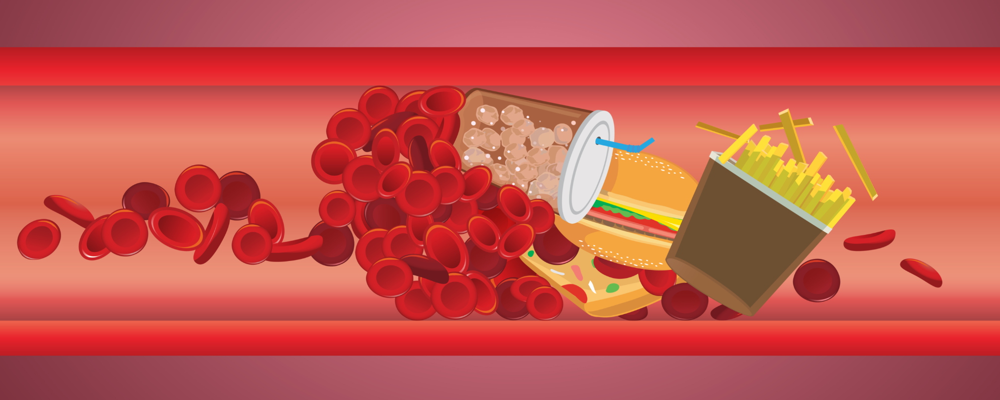

الدرس الثاني عشر
الدرس الثاني عشر

ضغط الدم والكوليسترول
ضغط الدم
بالنسبة للبالغين من مرضى السكري, يبلغ الهدف الموصى به بالنسبة لضغط الدم أقل من 130/80 ملم زئبق.
عند كل زيارة روتينية لمقدم الرعاية الصحية الخاص بك، ينبغي قياس ضغط الدم.
مستوى كوليسترول البروتينات الدهنية منخفضة الكثافة
هناك نوعان من الكوليسترول.
-

كوليسترول البروتينات الدهنية منخفضة الكثافة وهو النوع السيء من الكوليسترول، واﻟﺬي ﻳﻤﻜﻦ أن ﻳﺆدي إلى انسداد الأوعية الدموية.
-
أما كوليسترول البروتينات الدهنية مرتفعة الكثافة فهوأما كوليسترول البروتينات الدهنية مرتفعة الكثافة فهو النوع الجيد من الكوليسترول والذي يساعد على حماية القلب.
إذا كانت مستويات كوليسترول البروتينات الدهنية منخفضة الكثافة أعلى من 100 مجم/ ديسيلتر، يجب اجراء بعض التغييرات في نمط حياتك كجزء من برنامج الرعاية الخاص بك.